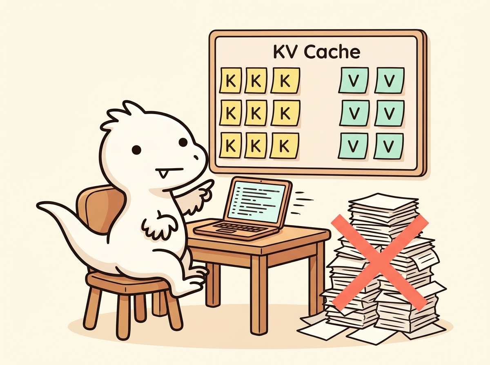
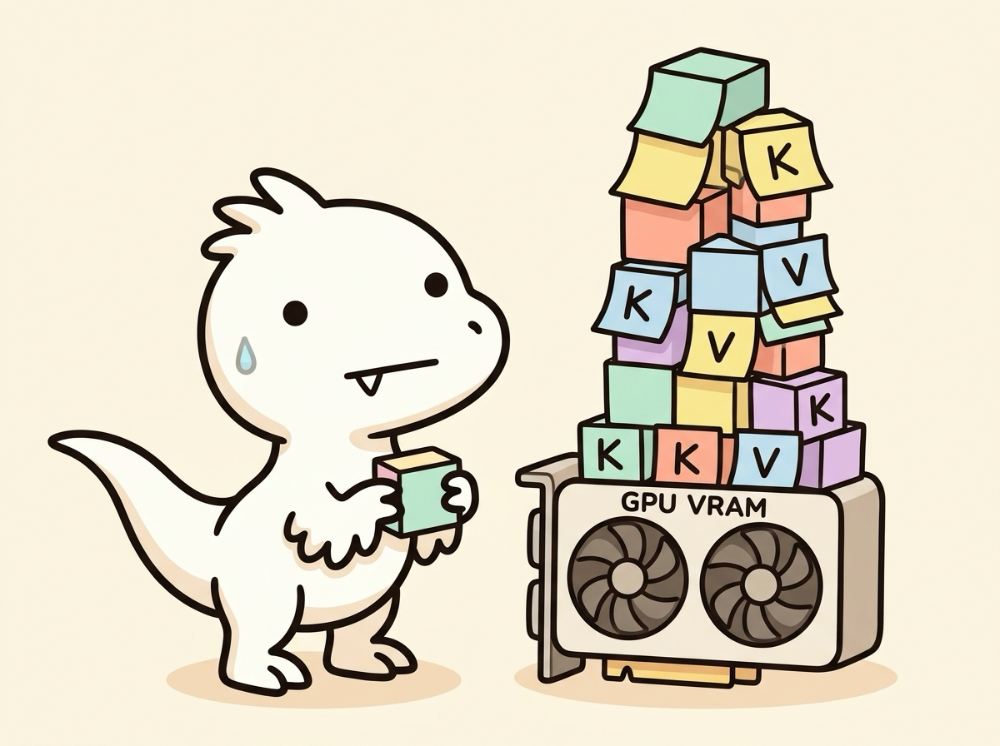

🦖 벨로키의 3분 해부🧠 LLM 핵심 원리 · KV Cache⚡ 왜 AI가 타다닥 빠를까?
“AI가 한 글자 쓸 때마다 처음부터 다시 읽는다고? 그걸 막아주는 포스트잇, KV 캐시”
ChatGPT나 Claude가 긴 대화에서도 타다닥 답을 뽑아내는 진짜 비결, 그리고 대화가 길어지면 GPU 메모리가 비명을 지르는 이유를 벨로키와 함께 3분 만에 뜯어봅시다.
한 줄 요약부터 보고 가자
LLM(거대언어모델)은 문장을 한 번에 뚝딱 만드는 게 아니라, 다음 단어(토큰)를 하나씩 이어 붙이는 방식으로 대답합니다.
문제는 새 단어를 하나 고를 때마다 앞에 나왔던 모든 단어와의 관계를 다시 따져봐야 한다는 점이에요.
매번 1번째 단어부터 다시 계산하면 문장이 길어질수록 끔찍하게 느려집니다.
그래서 이미 계산해 둔 앞 단어들의 요약 정보(Key, Value)를 메모리에 저장해 두고 재사용하는 기술이 바로 KV 캐시(KV Cache)입니다.
💡 핵심 한 줄: KV 캐시는 AI가 “아까 읽은 내용 또 계산하기 귀찮으니까 포스트잇에 적어두고 꺼내 쓰는 치트키”입니다!

벨로키: “1페이지부터 또 읽을 바엔 포스트잇(K·V) 붙여두고 커피 한 잔 하지 뭐.”
1왜 필요할까? “소설 쓸 때 매번 1페이지부터 정독하는 작가”
📖 소설 작가 비유
100번째 단어를 쓰려고 1~99번째 단어를 처음부터 끝까지 다시 정독하고, 101번째 단어를 쓰려고 또 1~100번째 단어를 처음부터 정독하는 작가가 있다고 해봅시다. 책 한 권 쓰다 해가 바뀌겠죠. KV 캐시는 이미 쓴 문단마다 “핵심 요약 포스트잇”을 붙여두는 겁니다. 101번째 단어를 쓸 때는 방금 쓴 100번째 단어의 포스트잇 1장만 새로 붙이고, 나머지는 붙여둔 걸 그대로 쓱 훑어보기만 하면 끝!
🎮 직접 눌러보기: KV 캐시 OFF vs ON 계산량 체험
아래 [다음 단어 생성] 버튼을 눌러 AI가 한 단어씩 말할 때 일어나는 일을 보세요!
생성된 단어 수
1개
방금 턴에 계산한 단어
1개
지금까지 누적 계산량
1회
벨로키지금은 KV 캐시 OFF예요. 단어가 늘어날수록 빨간색(재계산)이 어떻게 불어나는지 눌러보세요!
2잠깐, 왜 ‘QKV 캐시’가 아니라 KV 캐시일까?
트랜스포머(Transformer) AI는 단어들끼리 서로 얼마나 관련 있는지 계산할 때(어텐션) 각 단어를 Q, K, V 세 가지 역할로 변신시킵니다. 도서관으로 비유하면 딱 10초 만에 이해돼요!
Q
Query (방금 던진 질문)
“지금 내가 ‘먹을까’라는 단어를 쓰려는데, 앞문장에 음식 얘기가 있었나?”
방금 새로 나온 단어 딱 1개의 질문만 있으면 됩니다.
❌ 저장 안 함 (일회용 질문)
K
Key (책등 이름표)
앞 단어들이 달고 있는 검색용 태그입니다.
“나는 ‘치킨’이라는 음식 키워드야!”
앞 단어는 안 바뀌니 한 번 계산해 두면 끝!
📌 포스트잇에 저장 (Cache!)
V
Value (책 속 알맹이)
이름표(K)가 일치했을 때 실제로 꺼내 쓰는 내용입니다.
“바삭하고 짭짤한 저녁 메뉴 맥락”
이것도 과거 단어 내용이라 안 바뀝니다!
📌 포스트잇에 저장 (Cache!)
벨로키
결국 과거 단어들은 시간이 지나도 안 바뀌니까 이름표(K)와 알맹이(V)를 미리 저장해 두고, 새 단어가 나올 때마다 새 질문(Q) 1개만 들고 가서 쓱 매칭하는 거예요. 그래서 이름이 KV 캐시입니다!
3세상에 공짜는 없다: 속도를 얻고 GPU 메모리(VRAM)를 내준다

벨로키: “빠르긴 한데… 대화가 길어질수록 포스트잇이 GPU를 집어삼키는데요?”
포스트잇을 벽에 자꾸 붙이다 보면 언젠가 벽이 꽉 차겠죠? KV 캐시도 똑같습니다.
대화가 길어질수록(토큰 수 ↑), 그리고 여러 사람이 동시에 질문할수록(배치 수 ↑) 저장해야 할 K·V 덩어리가 눈덩이처럼 불어나 GPU VRAM을 먹어치웁니다.
⚠️ 메모리 한계 (OOM): 로컬에서 AI를 돌릴 때 모델 용량은 5GB인데 24GB 그래픽카드가 뻗는 이유? 십중팔구 컨텍스트를 너무 길게 잡아서 KV 캐시가 VRAM을 다 먹었기 때문입니다!
🎚️ 컨텍스트 길이 슬라이더: 내 GPU(24GB) 버틸 수 있을까?
※ 8B급 모델 기본 가중치(약 6GB)가 올라간 24GB GPU 환경의 직관 이해용 예시입니다. (모델 구조·레이어 수에 따라 실제 값은 달라집니다.)
대화 길이(컨텍스트): 16K 토큰예상 총 VRAM: 14.0 GB / 24 GB
1K (짧은 질문)32K (책 1챕터)64K (긴 코드베이스)128K (소설 한 권)
58%
벨로키아직 GPU가 콧노래 부르며 돌고 있어요! 슬라이더를 오른쪽으로 쭉 밀어보세요.
4실전! 클로드·코덱스·안티그래비티 쓸 때 KV 캐시 꿀빨기
“그럼 내가 매일 쓰는 코딩 에이전트에서는 KV 캐시를 어떻게 써먹어?”
사실 클로드·코덱스·안티그래비티 모두 서버에서 KV 캐시(프롬프트 캐싱)를 자동으로 돌려줍니다.
핵심 대원칙은 딱 하나: “프롬프트의 맨 앞부분(Prefix)이 1글자도 안 바뀔 때만 포스트잇이 재사용된다!”
🛠️ 도구별 KV 캐시 활용법 눌러보기
🚨 내 습관, KV 캐시 살리고 있을까? 깨고 있을까? (눌러서 확인!)
벨로키
요약하자면 “변하지 않는 규칙·문서는 맨 앞에 고정, 바뀌는 질문은 맨 뒤에 추가, 한 번 읽혔으면 식기 전에(5분 내) 연속 타격!” 이것만 지켜도 체감 속도와 쿼터 효율이 확 달라집니다!
5API·로컬 LLM까지 챙기는 보너스 꿀팁 3가지
💰 1. API 요금 확 줄이기
OpenAI·Anthropic·Gemini의 프롬프트 캐싱(Prompt Caching)이 바로 이 KV 캐시를 서버에 잠깐 저장해 주는 기능입니다. 시스템 프롬프트와 긴 참고 문서를 앞쪽에 고정해 두면 캐시가 재사용되어 입력 토큰 비용이 크게 줄어들어요!
🖥️ 2. 로컬 LLM 렉 줄이기
Ollama나 llama.cpp에서 num_ctx를 무조건 128K로 켜두면 KV 캐시가 VRAM을 다 먹어 CPU로 밀려나며 거북이가 됩니다. 필요한 만큼만 컨텍스트를 잡고, KV 캐시 양자화(q8_0)를 켜면 속도와 메모리를 둘 다 챙길 수 있어요.
🧩 3. MCP·도구 다이어트
에이전트에 안 쓰는 MCP 서버를 20개씩 켜두면 매 대화 앞부분에 거대한 도구 설명서가 붙어 KV 캐시도 커지고 관리가 무거워집니다. 자주 쓰는 도구만 켜두고 작업 중엔 건드리지 않는 것이 캐시 유지의 비결!